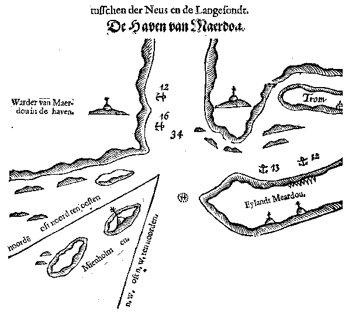
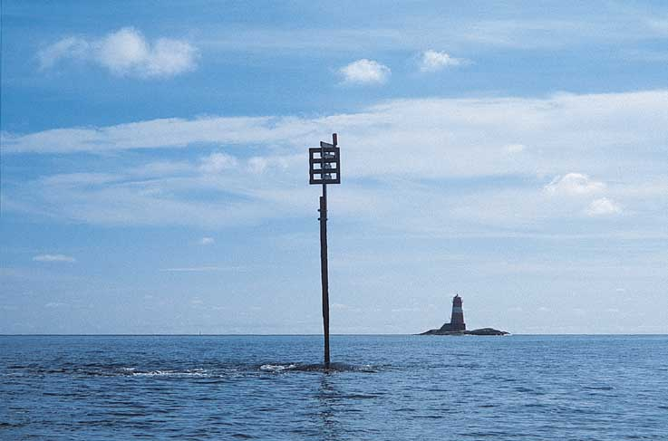

Sjømerkene ved Arendal
Tekst og bilder: Roald Hanssen.
Samarbeidsprosjekt mellom Riksantikvaren, Kystverket og Aust-Agder fylkeskommune. Prosjektrapport foreligger som bok til salgs i Aust-Agder fylkeskommune.
Varde og lykt Bonden
Sjømerkenes historie går langt tilbake i tid. Steinvarder er omtalt i vikingtida, og mye tyder på at det har eksistert en overordna merkestruktur i middelalderen. Utbygginga av det omfattende systemet som vi kjenner i dag, skjedde imidlertid i en hektisk periode fra ca. 1850 og framover til 1920-åra. Norge skulle bygge opp egen infrastruktur etter løsrivelsen fra dansk administrasjon i 1814, og kysttrafikken skulle trygges og utvikles

Merker Store Kvalsholmen
Sjømerkenes historie går langt tilbake i tid. Steinvarder er omtalt i vikingtida, og mye tyder på at det har eksistert en overordna merkestruktur i middelalderen. Men utbygginga av det omfattende sjømerkesystemet som vi kjenner i dag, foregikk særlig fra ca. 1850 og framover mot første verdenskrig. Norge skulle bygge opp egen infrastruktur etter løsrivelsen fra dansk administrasjon i 1814, og den livsviktige kysttrafikken skulle trygges og utvikles. Over 200 fyrstasjoner ble bygd, rundt 2000 lykter og lanterner etablert og nær 13000 dagmerker satt opp.
Varde Østre Sandskjær
Litt tallmateriale fra vår egen tid: I 1997 ble det gjort en kulturhistorisk registrering av sjømerker i Aust-Agder. Det var fylkeskommunen som i samarbeid med Kystverket og Riksantikvaren gjennomførte prosjektet. Det ble registrert.. 8 fyrstasjoner 77 lykter av ulike typer 398 dagmerker
Fyrlykt Holmesund
I storkommunen Arendal ble det funnet. 4 fyrstasjoner 18 lykter av ulike typer 68 dagmerker
Kart landkjenninger
Landkjenningene, av gammelt kalt «Overlandsmerker», følger sjøfarten på Agder fra de tidligste tider. Vi finner gjenkjennelige fjellformasjoner i hollandske losbøker og sjøkart fra 1500-tallet. Homborsunds fall, Imenessalen, Jomåsknutene - av sjøfolk kalt Tromlingene - og Hovdefjell kunne identifiseres mange mil ute i havet fra skuter på vei mot havner i Aust-Agder.
Landtoning Arendal
Kartene og losbøkene omtaler også såkalte «Underlandsmerker», dvs. markerte bygninger eller spesielle merker satt opp for navigering inn mot havnene. I losboka «De Kaert van der See» fra 1532 brukes Tromøy kirke som innseilingsmerke ved Arendal. Denne ”landtoningen” er tatt fra de nye sjøkartene som ble laget under overlos Løwenørns administrasjon i åra rundt 1800, og viser hvordan en kan finne innseilingen til Arendal. Til venstre ser vi Jomåsknutene, og til høyre kan vi så vidt skimte Tromøy kirke.
Vignett Tromø Kirke
Fra vignetten til det samme sjøkartet finner vi denne lille tegningen av Tromøy kirke, der den figurerer sammen med en tegning av Risørflekken.

Tromøy kirke
I sogneprest Jens Bojes beskrivelse fra 1700-tallet heter det:«Tromøe Kirke, som uden paa Veggene skal være hviid og paa Taget rødt til et Mærke 2 a 3 Miile nær under Landet for de Søe-farende,..». Fyrinspektør Schive skriver i 1832 : «Tromø Kirke males samtidig med de øvrige Sømærker…. og hele Malingen overdrages Overlodsen i Kristiansand. Arbeidet bør bortliciteres, og Malingen udføres med 1 1/2 Aars Mellemrum, hvilket muligens kan reduseres med Tiden de blir gjennemmalet.» Alt på den første statlige merkelista i 1839 er Tromøy kirke med. Synsvidden er oppgitt til 3 mil, som bekrefter det gamle sjømannsuttrykket «Naar Tromø Kirke staar paa Vandet, Saa er mand Tre Miil fra Landet». Kirka var offisielt sjømerke helt opp mot siste krig, og Merkevesenet ytte tilskudd til kalking iallfall av veggen som vendte mot sjøen. Da begynte verneskogen og annen vegetasjon å hindre innsyn til kirka fra sjøen.

Kart 1568
Selv om det er vanskelig å dokumentere sjømerker ved hjelp av skriftlige kilder, forteller kartene mye. På dette hollandske kartet fra 1568 finner vi iallfall merker på Hesnesøya og på Merdø. Det ser ut til å være master og en slags båker. Og ikke minst Tromøy kirke.
Kart 1645 Merdø
På 1600-tallet finner en denne hollandske beskrivelsen av innseilingen til Merdø havn. Her ser vi igjen Tromøy kirke, og en del av de vanligste merkene gjennom flere hundre år: en røys/varde med en stang med kost, en busk eller et tre på toppen. Det er merker på Lille Torungen, Merdø og på heia på begge sider ytterst i Galtesund.

Varde Bonden mot leia
Midt i innseilinga til Narestø og Tromøysund, i et nokså rotete farvann, ligger den lille holmen Bonden. Her har det trolig vært innseilingsmerke ganske tidlig. I dag står det en litt spesiell varde her. Den er bred og plump og gulmalt, slik den var da den ble satt opp i 1840-åra.
Varde Bonden - fra sida.
Slik ser den ut fra sida. En vil altså møte en form når en kommer kystleia, en annen når en kommer inn fra havet.
Tegning av Bonden
På fyrlista 1845 ser den slik ut, der den og Tromøy kirke figurerer som dagmerker, sammen med fyrene på Torungene og Sandvikodden.

Tegning av merkene
I hele landet var det bare rundt 10 offentlige sjømerker i 1814. Under krigen 1807-14 ble mange av losenes sjømerker fjerna for å hindre innseiling av engelske krigsskip. Risørflekken og Tromøy kirke ble endog malt sorte i et forsøk på å kamuflere merkene for fiendtlige fartøyer. Men etter tradisjonen ble det også satt opp en del nye merker av mannskaper som lå og vakta på fiendtlige skip. Først i 1820-åra kom arbeidet med videre statlig merking i gang, og i 1825 ble det satt opp 4 store trebåker ved innseilingene til gode uthavner:Sandøes Mærke, Mærke ved Hesnes, Nødingens Mærke, Ulvesunds Mærke. Prosjektet omfatta også Ryvingen Mærke i Lister og Mandals amt. På den første trykte oversikten over «Fyre og Dagmærker» fra 1839 finner vi 6 merker på vår kyststripe: de 4 trebåkene fra 1825, den eldgamle Risørflekken og Tromøy kirke.
Store Torungen
Fyrdirektørembetet ble oppretta i 1841 og Oluf Arntzen konstituert som direktør. Dette satte fart i etableringen av både nye dagmerker og en rekke store fyrprosjekt kysten rundt. Utbygginga i begynnerfasen foregikk hovedsakelig i Sør-Norge, med det tok det lang tid før Aust-Agder kom med. I 1832 sto Oksøy ferdig, og i 1839 ble Jomfruland tent. I 1838 hadde fyrinspektør Schive uttalt seg om nye fyranlegg mellom Jomfruland og Oksø, og det kongelige fyrkammer besluttet at det måtte bygges to fyr for å unngå forveksling med Oksøy og Jomfruland, som bare hadde ett lys. Dette var nemlig før blinkfyrenes tid, da hvert fyr fikk sin egen gjenkjennelige karakter.

Lille Torungen
Byggearbeidene på Store og Lille Torungen starta i 1843. Gårdbruker Gjeruld Terkielsen på Hiis gård solgte begge holmene til staten for 450 Spd. Materialet var teglstein, da steinen på øyene ikke egnet seg til bygging. Det gikk med 750.000 stein fra Berger teglsteinsfabrikk Drammen. Linser og glass ble bestilt fra Fresnel i Frankrike, lyktene pluss alt smijern ble laget på Næs jernverk.
Sandvikodden - gammelt bilde
I 1839 skrev en gruppe skipsredere til fyrmyndighetene og ba om enda et fyr, et innseilingsfyr ved Galtesund. Fra 1840 til 1844 ble det innkrevd en bomavgift idet skutene passerte inn Galtesund. På disse åra ble det samlet inn 900 Spd. Dette skulle være startkapital for Sandvikodden fyr. Staten eide en mulig tomt, nemlig den gamle bastionen på Sandvigodden. Fyrdirektøren antok ca. 1000 spd. overskudd på Torungene, som kunne brukes på Sandvigodden. Den statlige kommisjon aksepterte til slutt et tredje fyr, og høsten 1844 ble alle tre fyrene tent.
Møkkalasset fyr
Tverrdalsøen Sømandsforening tok opp spørsmålet om et kombinert innseilingsfyr for Oksefjorden og lei-fyr mot Tromøysundet. Fyret kom med på budsjettet for 1887-88. Det var ikke plass til familiebolig på det lille skjæret, så fyrvokterboligen ble satt opp i Brårvika inne på Flostaøya. Inne i støpejernsfyret var kjøkken og to små rom. Fyret ble tent i sept. 1888, men ble avfolka like etter krigen, med en fyrlykt som erstatning. Også den ble nedlagt i 1986, og i dag er Møkkalasset et rent dagmerke.
Lille Skottholmen
På Lille Skottholmen i Galtesund sto det fra 1885 et lite kommunalt innseilingsfyr i et ordinært «4-vinduers hus», der selve lampa var plassert i et karnapp på hushjørnet.
Lanterne Lille Skottholmen
Slik ser den samme holmen ut i dag. I 1904 ble fyret erstattet av en fyrlykt, som ble satt opp på et skjær nedenfor huset. Huset ble revet og flyttet til Arendal ca. 1925. I 1956 ble lykta tatt ned og erstattet av en rundtlysende lanterne.

Kystbåten ved Eydehavn (Bukkevikskjær)
Fra rundt 1850 kom det fart i dampskipstrafikken. Veksten hang sammen med utviklingen ellers i næringsliv og industri. Private dampskipsselskap satsa optimistisk i sørlandsbyene, mens postrute mellom Oslo og Kristiansand hadde vært i gang fra 1827 med Constitutionen og Prinds Carl. I denne perioden ser vi en rask tilvekst i sjømerkingen. Antall dagmerker i fylket steg fra 35 i 1870 til 295 i 1900, foruten 8 fyrstasjoner og 28 fyrlykter. I den første rene merkefortegnelsen i 1863 ser vi de første tegn til statlig merking av indre lei: staker med kost, støpejernsøyler, varder og tremaster. Særlig i 1870- og 1880-åra igangsatte også Havnevesenet vesentlige utbedringer av innseilinger og leder, f.eks. i Narestø og i Merdøgapet. Denne virksomheten gjenspeiles i tilveksten av varder, jernstenger og flytestaker i disse områdene. Bildet er fra Bukkevikskjær ved Eydehavn, under utbyggingen av fabrikkene i 1912.
Faste dagmerker
En rekke faste dagmerker ble tatt i bruk for å vise kystleia, de fleste bygde på losenes merketyper fra den tida da losene hadde ansvar for merking innenskjærs, og staten for de store innseilingsmerkene:
Jernstang med eller uten viser eller krekse (toppmerke; grind)
Støpejernsøyler med eller uten toppmerke
Trebåke
Varde med og uten viser
Duc d’albe eller trebeining / jernbåke
Jernstang på Buskjær-steinen
Jernstanga på Buskjærsteinen er et av de østligste merkene i Arendal, og finnes på den aller første merkelista i 1863. Denne grunna har trolig vært merka på en eller annen måte lenge før dette året.
Jernstang Teistholm-båen
Jernstanga på Teistholmbåen utenfor Kalvøysund markerer et farlig skvalpeskjær ved kystleia.
Jernstang Åmdalsøra
Jernstang med krekse ved Åmdalsøra, etablert i 1877.
Jernstang montering
Jernstengene er de aller vanligste merkene langs kystleia. Det var et mål å sette dem så langt ut mot leia som mulig, men vanskelig å feste dem til bunnen på noe særlig dyp uten dyr dykkerhjelp. Med såkalte «anleggsstoler», som en smed fra Sunnmøre konstruerte i 20-åra, kunne merkelaga bore på sjøbunnen på inntil 4 meters dybde. Slik kunne stengene plasseres lenger ut fra båen og nærmere leia. Anleggsstolen var et stillas av jernstenger med en arbeidsplattform på toppen. Boringen med håndkraft, og det ble brukt bor med skjær i full bredde, altså opptil 6 tommer (150 mm)! Tre mann jobba sammen, idet to slo med feisler og en håndterte boret. Merkelaga besto av formann og 8 mann, da det tunge arbeidet var basert på jevnlig avløsning og hvile. Boret måtte skiftes ut etter 600 - 1500 slag, alt etter av hvor hardt fjellet var. Hullene ble gjort svakt koniske for at stengene skulle kiles fast. I noen tilfelle ble de festa ekstra med jernkiler eller støp.
Varde Brenningene
Varden på Brenningene utenfor Tromøy ble etablert i 1888. De fleste vardene er tørrmurte, om de er plassert i trygg høyde fra flomål og bølgeslag. Et flertall ble bygd av Merkevesenet i perioden 1870-90, og oftest så nær sjøen at en måtte regne med harde påkjenninger i uvær. Derfor ble mange murt opp av stor sprengstein og sementmørtel. På utsatte skjær ute i havbrynet, som på Brenningene utenfor Tromøya, ser vi merker etter stadige reparasjoner, der armert betong etter hvert erstatter tidligere byggeteknikk.
Borehull
Der det overhode var muligheter for det, ble steinen tatt ut på stedet. Flere steder finner en små steinbrudd nær varden, og gjerne borehull, merker etter kiler og stein som er blitt til overs.
Søyle Vestre Romlings-båen
Støpejernsøylene er tykkere og bedre synlig enn de tynne jernstengene, og står enten på tørt land eller på skvalpeskjær, til dels på svært utsatte steder, og de har klart seg imponerende godt. Denne står på Vestre Romlingsbåen, nær Bonden, og har stått godt siden 1882.
Søyle Østre Romlings-båen
Det samme gjelder makkeren på Østre Romlingsbåen, som også er forsynt med et spyd på toppen. Den største tilveksten av søyler er i perioden 1866-1882, med 8 nye søyler. Men søyler etableres helt opp til 1947. Av opprinnelig 18 søyler på Aust-Agder-kysten er stadig 11 i full bruk (1997).
Trebåke Merdø
Ved innseilinga til Galtesund ser vi de to karakteristiske trebåkene på Tjuvholmen og Småholmen. Disse ble satt opp for å erstatte to master som sto der tidligere.
Trebåke Merdø 2
Overettlinja gjennom de to båkene viser innseilinga til Merdø havn fra øst.
Kanon Narestø
På et undervannsskjær i Narestø havn står denne kanonen. Den er med på merkelista i 1872, og bakgrunnen for hvorfor og hvordan denne kanonen ble plassert her, er ikke kjent. Den ble satt opp samme år som Havnevesenet avsluttet sitt store arbeid med moloen i Narestø. Kanonen står på ca. en meters dyp, er 2.2 m lang fra foten nede på skjæret til munningen, og måler 33 cm i ytre diameter ved munningen. Kanonen har vært brukt både til å vise skjæret og som fortøyningsanordning.
Stake Pusnesbåen
Stake ved Pusnesbåen. Offentlige flytende merker ble først lagt ut i Oslofjorden i 1818. I 1863 finner vi 6 «Stager med kost» i vårt fylke. Stakene, som alle var hvitmalte, skulle rage 6-8 fot over vannet. På toppen skulle plasseres en kost eller en einerbusk, og en tilsynsmann skulle betales for å ha tilsyn med staken og ta den opp ved isgang. Etter 1863 økte antallet staker sterkt, og på merkelista 1877 finner vi 49 flytende merker i Aust-Agder.
Et nytt system ble satt ut i livet i 1878. Hvit stake med oppadvendt kost betegnet at grunnen lå nord eller øst for merket. Sort stake med nedadvendt kost eller uten kost, betegnet at grunnen lå sør eller vest for merket. Stake med hvite og sorte horisontale striper og med tverrspiler på toppen betegnet at det kunne holdes på begge sider.
I 1914 kom en ny endring. Nå ble det bestemt en hovedretning for kystleia: Skip som kom inn til kysten ved Lista og gikk østover, skulle ha sorte staker til styrbord og røde til babord. Så var det egne regler for innseilingene til hver enkelt havn.
I 1981 slutta Norge seg til IALAs retningslinjer (International Association of Lighthouse Authorities). Fremdeles gjelder regelen om at hovedleia går fra Lista mot svenskegrensa. Grønne staker brukes til styrbord og røde til babord (lateralmerking).

Stake Målen
Inn til noen havner (og enkelte andre steder) er det vanskelig å følge lateralsystemet konsekvent. Her brukes sorte/gule staker, eller sorte/røde, som markerer grunnene i forhold til himmelretningene (kardinalmerking). I tillegg brukes senterleimerker, merker for frittliggende grunner og spesialmerker.
Stakelager Askerøya
Et av Merkevesenets stakelager lå ved Lyngør. Skader på flytende og faste merker ble reparert av merkelagene. Vind, sjø, strømforhold og hærverk kunne føre til skader. For trestakene var det spesielt viktig med tilsyn og vedlikehold. Disse var utsatt for strøm og uvær, og for skipstrafikk, og skulle fjernes når isen la seg. Stakene skulle legges ut mot leia, på minst 7 meters dybde hvis mulig, og fortøyes med en bunnstein og et lodd for å holde staken loddrett i vannet. Grove kjettinger ble brukt til bunnfortøyning. Merkevesenets arbeidsbåter skiftet ut stakene, slik at de lå ett år i sjøen og to år på land for å tørke og bli malt opp. Rundt 45 «kostebuer» for opplag av staker og bøyer ble satt opp langs hele kysten.

Lykt i trehus Gitmertangen
Innføringa av den lille fyrlykta regnes for en av de viktigste begivenheter i Fyrvesenets historie. En slik lykt montert inne i en liten «kiosk» av tre var rimelig å sette opp, og en fisker kunne passe den. Av de 13 første lyktene som Stortinget bevilget penger til i 1883, ble tre satt opp ved innseilinga til Grimstad. I løpet av neste tiår kommer det fyrlykter på Lyfjell og Bukkevikskjær i Tromøysund og ved Kilsund og Oksefjorden. Allerede ved århundreskiftet sto det rundt 500 slike lykter på norskekysten. Nå kunne kysttrafikken gå natt og dag, og hele året! Men trebuene var brennbare, og gassoljelampene sota og var vanskelige å holde under kontroll. Etter en del branner i de utsatte trehusene, ble løsningen å lage selve huset av støpejern. I dag står den siste trelykta i fylket her på Gitmertangen, lengst øst på Tromøya.
Fyrlykt Gitmertangen nedre
Fyrlyktene på Gitmertangen er satt opp som overettlykter i to leier. Derfor står det hele tre lykter nokså nær hverandre. Her Gitmertangen nedre.
Fyrlykt Skinnfelltangen
Tvers over sundet for Gitmertangen står lykta på Skinnfelltangen.
Fyrlykt Merdø
Lykta på Merdø ble satt opp i 1894 som den første i fylket av mange små åttekantede «kiosker» av støpejern.
Fyrlykt Kilsund
Lykta på Kvakneset ved Kilsund, etablert i 1888. Her ser vi noe av den spinkle infrastrukturen til lyktene, som sikra trygg atkomst for tilsynsmannen.
Fyrlykt Frisøya
Da Det Norske Nidridaktieselskab starta utbygging i Bukkevika, måtte lykta der tas ned. Den ble erstatta av denne lykta på Frisøya, litt lenger vest.
Lanterne Håholmbåen
Den første rundtlysende acetylengasslanterna i Aust-Agder ble satt opp på en jernbåke ved Store Kvalsholmen utenfor Gamle Hellesund i 1920. Her på Håholmbåen sto det opprinnelig en jernstang. Siden den lå midt i innseilinga til Arendal, ble det satt opp en trebeining av jern i 1911 med en fyrlykt. Denne ble erstattet av en lettere lanterne i 1971.
Lanterne Renneskjær
Renneskjær mellom Møkkalasset og Tromøya. På en eldre varde ble det i 1935 montert lanterne for å forsterke dagmerket med lys. Et stor hvitt kors er malt på begge sider for å markere leia.
Lanterne Kjørrvig-pynten
Et lanterneskap ved Kjørrvika på Tromøy. Fra 1980-tallet har de aller fleste lykter og lanterner fått strøm ved hjelp av solcellepanel, så sant de ikke ligger slik til at de kan kobles til nett med kabel eller luftspenn.

Lanterne Galten
Galten i Galtesund. Stort enklere kan ikke et fyrlys være!
Lille Torungen fyr og lykt
Et nokså vanlig syn i dag: Et nedlagt fyr og en enkel fyrlykt som erstatning. Lille Torungen ble nedlagt i 1912, etter at en undersøkelse viste at begge tårnene var sterkt medtatt. Tårnet på Store Torungen ble revet og erstattet av et støpejernsfyr. På Lille Torungen ble husene flyttet til land, mens selve tårnet ble stående. Senere er begge anleggene blitt fredet, og det er dannet en venneforening for det gamle anlegget på Lille Torungen.
Sandvikodden fyr og lykt
Fyrstasjonen på Sandvikodden ble nedlagt i 1934, da en lykt ble plassert i et høyt tårn som erstatning. Dette anlegget er privat eid, og fredet etter kulturminneloven.
Møkkalasset fyr
Støpejernsfyret på Møkkalasset, som ble automatisert og avfolka i 1946, og der alt lys ble slokket i 1986, er fremdeles i Kystverkets eie og freda, men brukes ikke i noen sammenheng for øyeblikket.
Disse eksemplene illustrerer problemstillingene knytta til slike verdifulle tekniske kulturminner, som også er store byggverk og uhyre kostbare å vedlikeholde og bevare, særlig fordi de ligger svært utsatt til for vær og vind. Hvem ta ansvaret, og hvem finansierer? De færreste i dag vil være uenig i at anleggene bør vedlikeholdes til glede for nye generasjoner og for forskningsformål.
Jernstang Østerbukt
Som trafikkbildet på sjøen endrer seg over tid, vil også sjømerkingen endres. Merking er knytta til nyttetrafikken langs innseilingene, kystleia og inn til kystnære fabrikkanlegg, som her i Østerbukt i Tromøysund.
MS Villa
Kystverket har ansvaret for at merkesystemene virker, og for at merkene er intakte. Her en av Kystverkets vedlikeholdsbåter, Villa. Mannskapet ved de gjenværende bemannede fyrstasjonene har de siste åra hatt ansvar for vedlikehold og tilsyn, særlig med fyrlykter og lanterner. I dag går avbemanningen av fyrene mot 100%, og både sikkerhet og vedlikehold blir en enda større utfordring for Kystverket.
Rust Hauktangskjæret
For alt slites ute i havbrynet, så nærme slagregn, vind og saltvann: tre, betong, jern og andre metaller. Her korrosjon på en jernstang.
Bøyd jernstang Havsøybrottet
På særlig utsatte steder vil av og til jernstengene se slik ut. Her står stangen naken, for en krekse vil bli slått av umiddlebart. Trolig har isen dratt stanga med seg og bøyd den i bunnen. Så har vedlikeholdslaget tatt den opp og snudd den, før isen enda en gang har dratt den skjev.
Overettmerke Havsøy
To merker på utsiden av Havsøya. Disse hører ikke til noen kjent kategori merker. Kystverket oppgir at de er satt opp for å vise hvor en utløpsledning for kloakk ligger, og at de blir brukt som overettmerker av fiskere for at disse skal unngå å komme borti ledningen med garn og trål.
Varde Eydehavn - privat
Kystverket må av og til forholde seg til mindre merker som privatfolk eller foreninger setter opp. Her en varde i Neskilen ved Eydehavn.
Hvit flekk Eydehavn
Og her en hvit flekk på Frisøya, kanskje satt opp av samme motorbåtforening
Risørflekken
Hvite flekker som sjømerking er ikke noe nytt fenomen. De har vært brukt i generasjoner langs hele kysten, som for eksempel her i Risør iallfall fra 1641.
Oljebu Spærholmen
Spærholmen på grensen til Grimstad, der fugl råder runnen det meste av året. Da Kystverket i 1980-åra skifta ut de gamle oljebrennerne i fyrlyktene med strøm fra nett eller solpanel, ble de små oljebuene overflødige. Noen ble fjerna eller flytta av kystverket selv, mens de fleste ble tilbudt grunneier eller et interessert kystlag. Ikke alle passer like godt på disse små bygningene, som for mange av oss er et så kjent syn at vi føler de er en del av naturen, slik som på dette bildet.